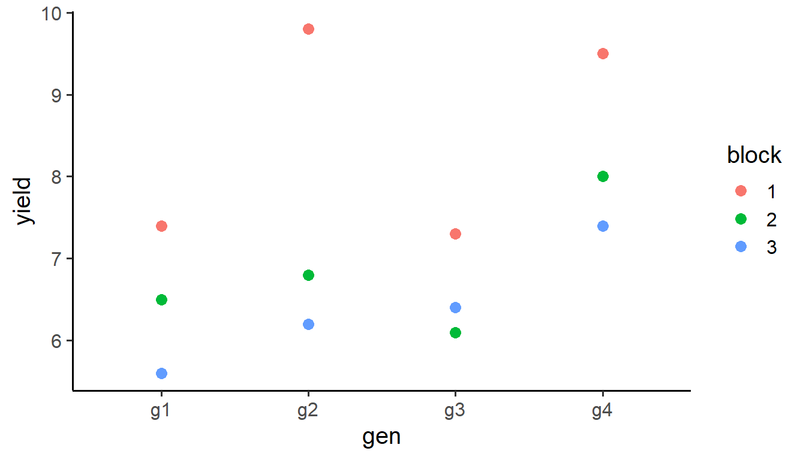

How to compute ANOVA for a randomized complete block design (RCBD) by hand, verify with lm(), and extract genotype means and pairwise comparisons with emmeans.
1) Setup & data
Clewer and Scarisbrick (2001) present a yield trial (t/ha) conducted using a randomized complete block design. The design included three blocks and four cultivars, resulting in 12 experimental plots.
library(tidyverse)library(emmeans)library(gt)# Read and coerce factorsdata <-read.csv("../data/example_1.csv") |>mutate(gen =as.factor(gen), block =as.factor(block))head(data)
data |>ggplot(aes(x = gen, y = yield, color = block)) +geom_point(size =3) +theme_classic(base_size =15)

Yield by genotype colored by block.
Descriptive means
# Mean by genotypeby_gen <- data |>group_by(gen) |>summarise(mean =mean(yield), .groups ="drop")by_gen |>gt()
gen
mean
g1
6.5
g2
7.6
g3
6.6
g4
8.3
# Mean by blockby_blk <- data |>group_by(block) |>summarise(mean =mean(yield), .groups ="drop")by_blk |>gt()
block
mean
1
8.50
2
6.85
3
6.40
# Overall meanoverall <- data |>summarise(mean =mean(yield))overall
mean
1 7.25
2) Linear model building blocks
We will progressively build the RCBD model using model.frame() and model.matrix() to see the design matrices explicitly, then solve normal equations. We use:
\(y\): response vector (yield)
\(X\): model matrix
\(\hat\beta = (X^\top X)^{-1} X^\top y\)
Fitted values \(\hat y = X\hat\beta\)
Errors \(e = y - \hat y\)
Sum of squared errors \(\text{SSE} = e^\top e\)
Let n = 12 observations, n_blks = 3 blocks, n_gens = 4 genotypes.
Source Df SSq MSq F.value Pr(>F)
1 block 2 9.78 4.89 12.225 0.007650536
2 gen 3 6.63 2.21 5.525 0.036730328
3 residuals 6 2.40 0.40 NA NA
Note
Why does this work? In fixed-effects ANOVA, Type-I SS for adding a factor equals the reduction in SSE between nested models. Here we use the intercept-only model as the baseline; adding block or gen reduces SSE by their respective SS.
4) Verify with lm()
mod <-lm(yield ~1+ block + gen, data = data)summary(mod)
Call:
lm(formula = yield ~ 1 + block + gen, data = data)
Residuals:
Min 1Q Median 3Q Max
-0.5500 -0.3625 -0.0500 0.1750 0.9500
Coefficients:
Estimate Std. Error t value Pr(>|t|)
(Intercept) 7.7500 0.4472 17.330 2.37e-06 ***
block2 -1.6500 0.4472 -3.690 0.01021 *
block3 -2.1000 0.4472 -4.696 0.00334 **
geng2 1.1000 0.5164 2.130 0.07719 .
geng3 0.1000 0.5164 0.194 0.85284
geng4 1.8000 0.5164 3.486 0.01305 *
---
Signif. codes: 0 '***' 0.001 '**' 0.01 '*' 0.05 '.' 0.1 ' ' 1
Residual standard error: 0.6325 on 6 degrees of freedom
Multiple R-squared: 0.8724, Adjusted R-squared: 0.7661
F-statistic: 8.205 on 5 and 6 DF, p-value: 0.01173
5) Interpreting coefficients under treatment coding
With block and gen as factors and an intercept present, R uses treatment (reference-cell) coding by default. The printed beta therefore contains:
beta[1]: the intercept (mean for the reference levels block1 and gen1 reference)
beta[2:3]: effects for non-reference blocks
beta[4:6]: effects for non-reference genotypes
You can reconstruct overall mean, genotype cell means, and block means as follows.
# Number of coefficients in full modeln_coef <-length(beta)# Overall mean reconstructed from coefficientsmu_recon <- beta[1] +sum(c(0, beta[2:3])) / n_blks +sum(c(0, beta[4:6])) / n_gensmu_recon
[1] 7.25
# Compare with the intercept-only estimatebeta_mu
[,1]
(Intercept) 7.25
5.1 Genotype means including the missing (reference) level
# beta currently has: (Intercept), block2, block3, gen2, gen3, gen4# Create a named vector for gen effects including the reference level set to 0print(beta)
gen emmean SE df lower.CL upper.CL
g1 6.5 0.365 6 5.61 7.39
g2 7.6 0.365 6 6.71 8.49
g3 6.6 0.365 6 5.71 7.49
g4 8.3 0.365 6 7.41 9.19
Results are averaged over the levels of: block
Confidence level used: 0.95
# Standard errors of genotype via (X'X)^{-1}sqrt(diag(XtX_inv)[4:6] * sigma_2)
geng2 geng3 geng4
0.5163978 0.5163978 0.5163978
# Pairwise genotype comparisonspairs(emm_gen)
contrast estimate SE df t.ratio p.value
g1 - g2 -1.1 0.516 6 -2.130 0.2447
g1 - g3 -0.1 0.516 6 -0.194 0.9971
g1 - g4 -1.8 0.516 6 -3.486 0.0486
g2 - g3 1.0 0.516 6 1.936 0.3066
g2 - g4 -0.7 0.516 6 -1.356 0.5656
g3 - g4 -1.7 0.516 6 -3.292 0.0609
Results are averaged over the levels of: block
P value adjustment: tukey method for comparing a family of 4 estimates
# For a quick hand-check of a simple pairwise SE when balanced:sqrt(sigma_2 /3+ sigma_2 /3)
[1] 0.5163978
Important
Notice that the standard errors via \((X' X)^{-1}\sigma^2\) are different to the ones return by emmeans. Interestingly those from \((X' X)^{-1}\sigma^2\) look exactly like the pairwise genotype comparison Standard Errors. Why? We will see why in the next article.